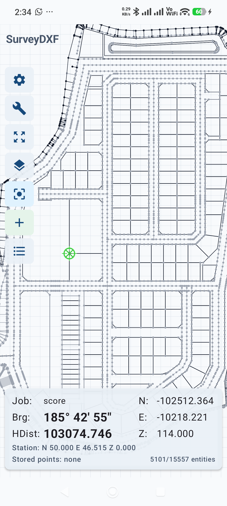

Save DWG as DXF
Prepare a lightweight DXF drawing from your CAD file and transfer it to the Android phone.
Android stakeout from DXF drawings
SurveyDXF replaces the paper-and-calculator workflow for common field stakeout. Open a DXF on your phone, set your total station coordinates, tap the point you want to stake, and read the bearing and distance instantly.
Always verify bearing, distance, coordinates, elevation, and drawing completeness before using results for final staking.

What it replaces
Prepare a lightweight DXF drawing from your CAD file and transfer it to the Android phone.
Enter the total station northing, easting, and elevation, pick from drawing, or use resection.
Use your finger to select the point or geometry you want to stake from the DXF drawing.
Read bearing and horizontal distance directly on the phone, then rotate the total station to the point.
Field features
Open DXF drawings, pan and zoom, control layers, and inspect CAD geometry from the phone.
Set station coordinates once, then tap drawing points to get HA and horizontal distance.
Compute your station position from two known points and measured distances, with optional angle quality checks.
Use drawing snap points, store stakeout points, and keep a point list for the job.
Export saved points to CSV or PDF for checking, sharing, and office records.
Record level runs and export level-book reports from the same field tool.
The app warns when unsupported CAD objects are skipped so users can verify drawings before staking.
Save, edit, and manage station presets for quick setup across projects.
Flexible plans
Start with a full-featured 30-day trial. After the trial, unlock with a monthly or yearly subscription, or buy a Lifetime Pro license. All purchases are handled securely through Google Play.
Your license is linked to your Google account — sign in on any Android device and restore your purchase.
Auto-renewing monthly subscription. Cancel anytime.
Yearly SubscribeAuto-renewing yearly subscription. Best value for regular users.
Lifetime Pro One-time purchasePay once, unlock forever. Includes all future updates.
View on Google PlayInstall directly from Google Play. Start your 30-day free trial, then subscribe monthly or yearly, or unlock Lifetime Pro with a one-time purchase.
Need help? Contact support on WhatsApp